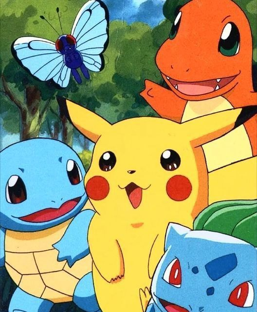
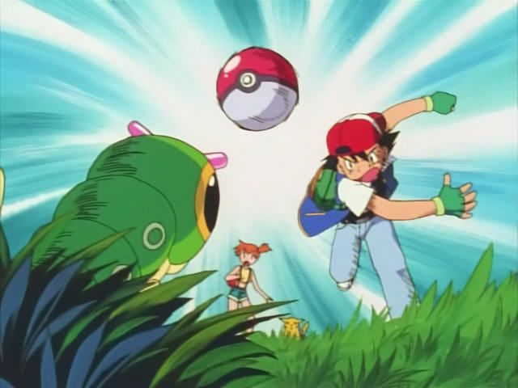
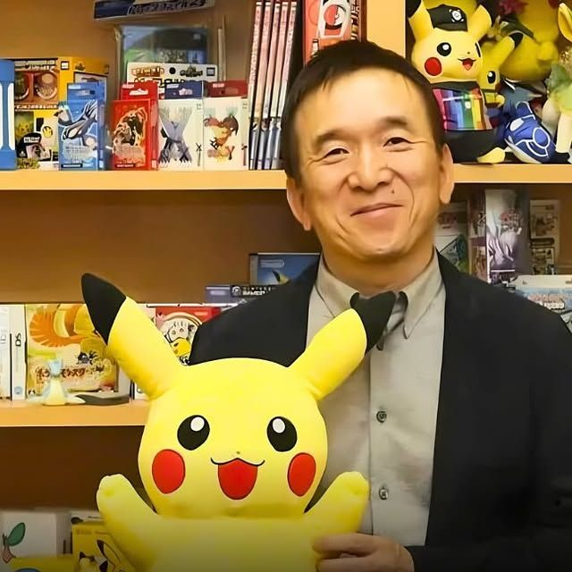

| PRESENTACIÓN | ASH KETCHUM | PIKACHU DE ASH | EQUIPO ROCKET | FUENTES |
Los Pokémon (ポケモン Pokémon en japonés) son criaturas ficticias, que dependiendo de la especie o el
tipo, pueden tener rasgos físicos parecidos a animales, plantas, rocas, fantasmas, o incluso humanos
(aunque de tamaño en muchos casos muy superior a lo que mediría la especie a la que se parece). Poseen
poderes fantásticos que pueden utilizar llevando a cabo movimientos o habilidades para atacar,
defenderse o cumplir sus necesidades. Generalmente pueden vivir en todo tipo de entornos, subsistiendo
en la libertad de la naturaleza o conviviendo con humanos y ayudándolos.
[Pokémon Wiki, s. f.].


La historia de la franquicia Pokémon se expande más allá de una década desde que se empezó a trabajar
oficialmente en el primer juego hasta ahora y tiene raíces incluso más antiguas. Empezó como el hobby
de Satoshi Tajiri, quien desde niño disfrutaba cazando insectos y renacuajos en un bosque cerca de su
casa, en el suburbano de Tokio.
Pasado un tiempo ese bosque que visitaba fue destruido, y en base a aquel suceso Satoshi decidió poner
en práctica su afición de capturar insectos porque quería que los niños disfrutasen tanto como él lo
había hecho hasta aquel día. Gracias a la ayuda de Shigeru Miyamoto consiguió que Nintendo valorara su
proyecto que finalmente se comercializó el 27 de febrero de 1996. Después de ese día y debido al enorme
éxito Nintendo continuó desarrollando juegos de Pokémon para la mayoría de sus plataformas.

La palabra Pokémon es la escritura con letras latinas de las japonesas: "ポケモン", que son una
abreviatura de Poketto Monsutaa (escrito en katakana como ポケットモンスター), que a su vez proviene
del inglés 'Pocket Monsters', que quiere decir "monstruos de bolsillo". Esto viene del hecho de que los
Pokémon se guardan en Poké Balls, las cuales se pueden encoger con lo que se pueden meter en el
bolsillo. Además, originalmente, Pokémon fue lanzado para Game Boy, consola que cabe perfectamente en
un bolsillo, que casualmente de preferencia al nombre de la serie, videojuego, juego de mesa, etc.
En inglés, la palabra se escribe Pokémon con tilde en acento agudo, a pesar de que este signo no existe
en el uso habitual de este idioma. Esto se debe a que al unir las palabras Pocket Monster se obtuvo
Poke-Mon. El problema es que según las normas del inglés, esto se pronunciaría como /pəʊk'mɑ:n/
(pouk mon). En muy pocos otros casos (como maté que se pronuncia /mátei/ y quiere decir mate) se puede
poner en inglés un acento en la "e" para que esta se pronuncie, resultando así el nombre "Pokémon".
En español se puede usar la transcripción rōmaji que prescinde del acento por razones ortográficas, si
bien en el uso comercial habitualmente aparece usando la tilde.
[Pokémon Wiki, s. f.].
Primer Opening del anime pokémon
| VOLVER A LA PRESENTACIÓN | SIGUIENTE |